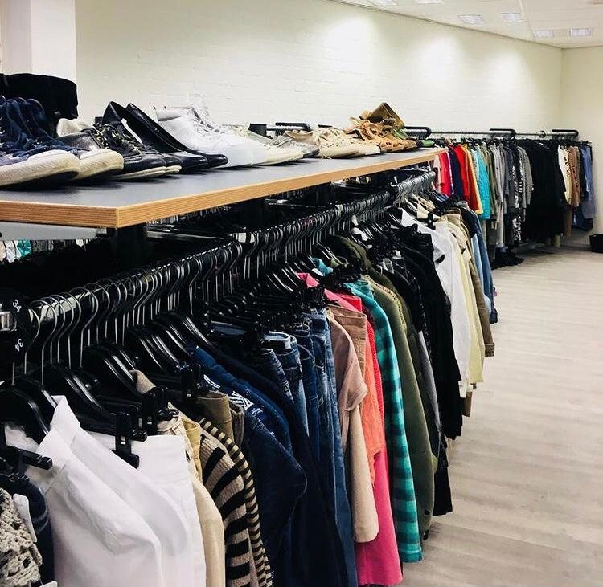
Tweedehands kleding
Kleding en schoenen voor dames en heren, plus themakleding. Elke week hangen we nieuwe kleding in.
8 dagen ruilen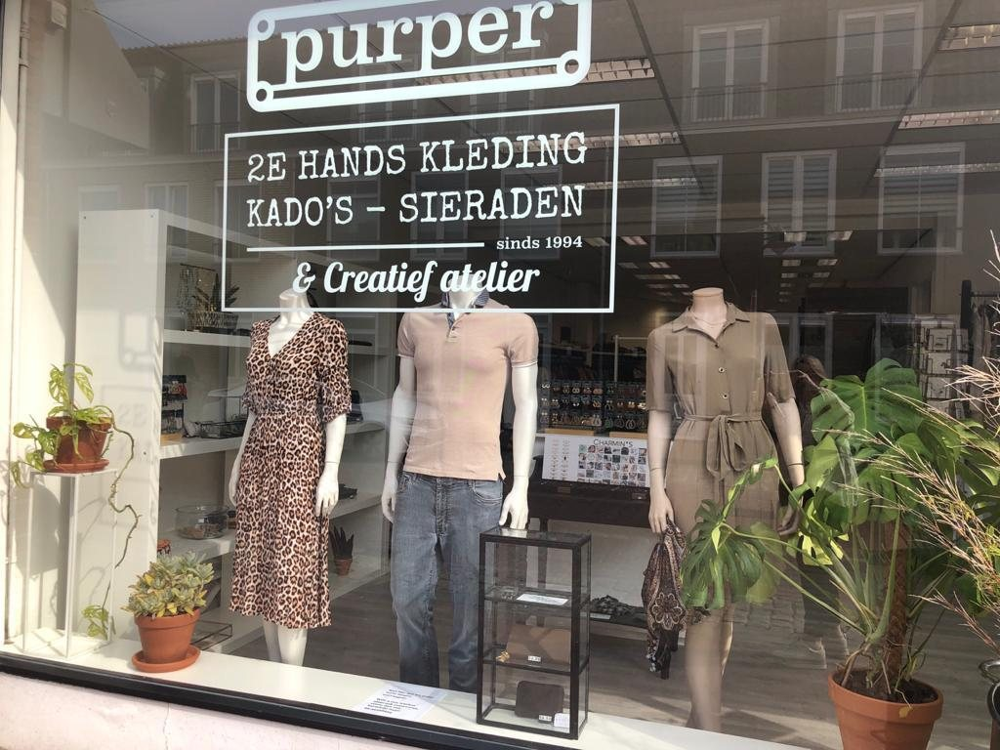
Tweedehands dames- en herenkleding, schoenen en nieuwe sieraden in Hoogerheide. Sinds 1994, en elke week hangt er nieuwe kleding in de rekken.
Een veelzijdige winkel: betaalbare tweedehands kleding, nieuwe sieraden en één keer per maand een garagesale.

Kleding en schoenen voor dames en heren, plus themakleding. Elke week hangen we nieuwe kleding in.
8 dagen ruilen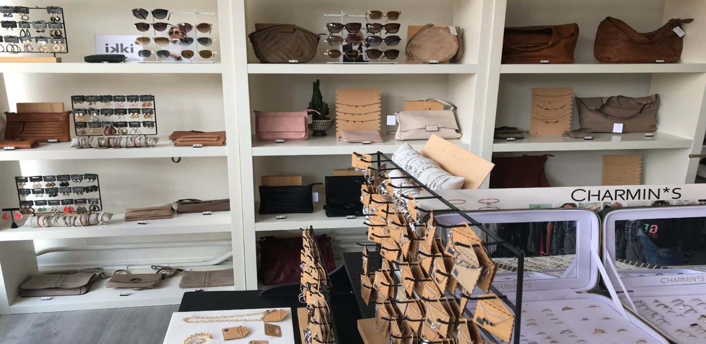
Nieuwe sieraden van trendy labels als Go Dutch Label en Charmin*s. Leuk voor jezelf of als kado.
Nieuw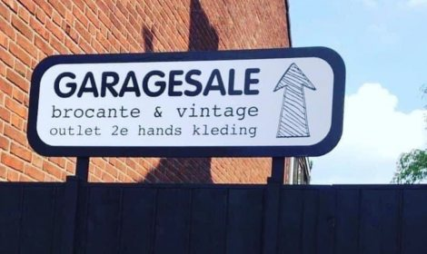
In de loods achter de winkel: kleding en schoenen in de sale, plus wat kleine kringloopspullen. Ongeveer één zaterdag per maand.
€ 2,00 per stukKom gerust rondsnuffelen. De nieuwe styling van de week zie je al in de etalage.
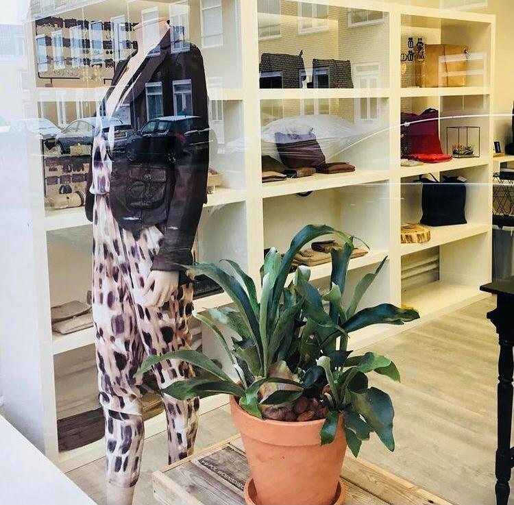
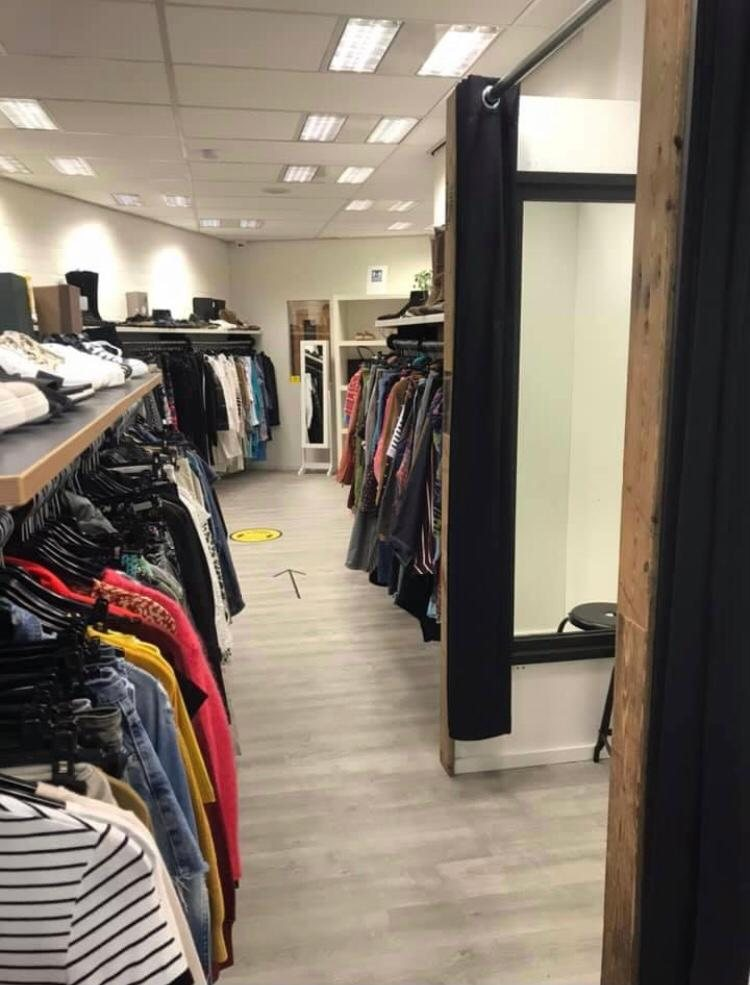
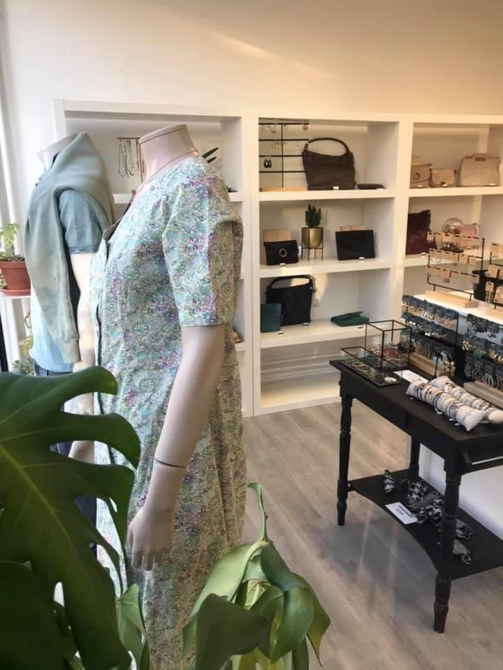
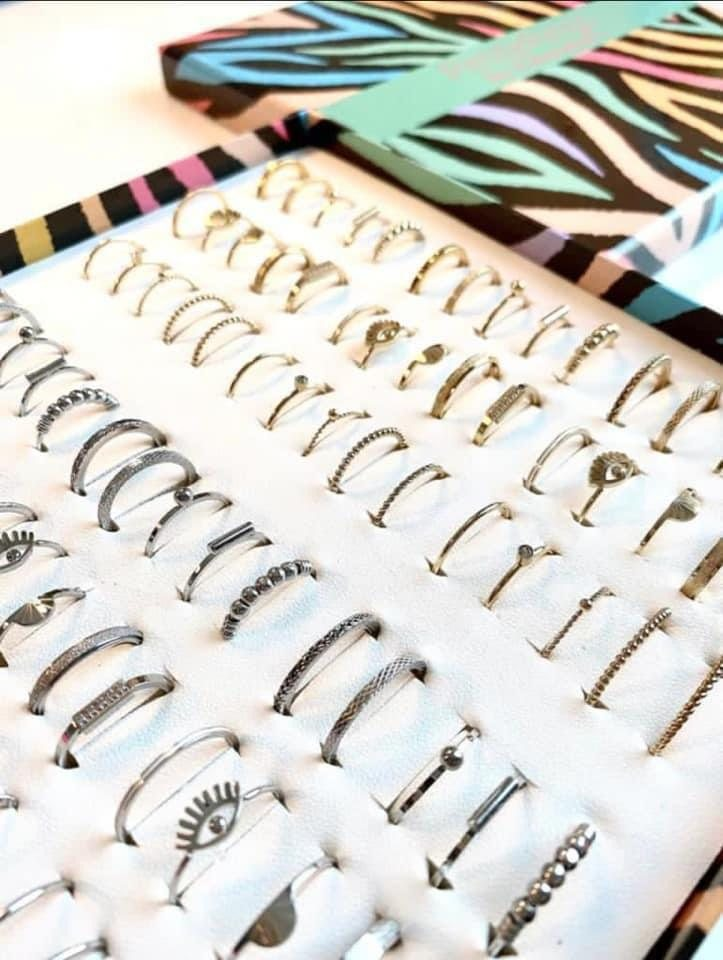
Naast tweedehands kleding verkopen we sieraden van trendy labels. Met een goede prijs-kwaliteitverhouding en altijd de nieuwste trends.
Sieradenlabel uit het zuiden van Nederland. Van statement oorbellen tot klassieke oorringetjes.
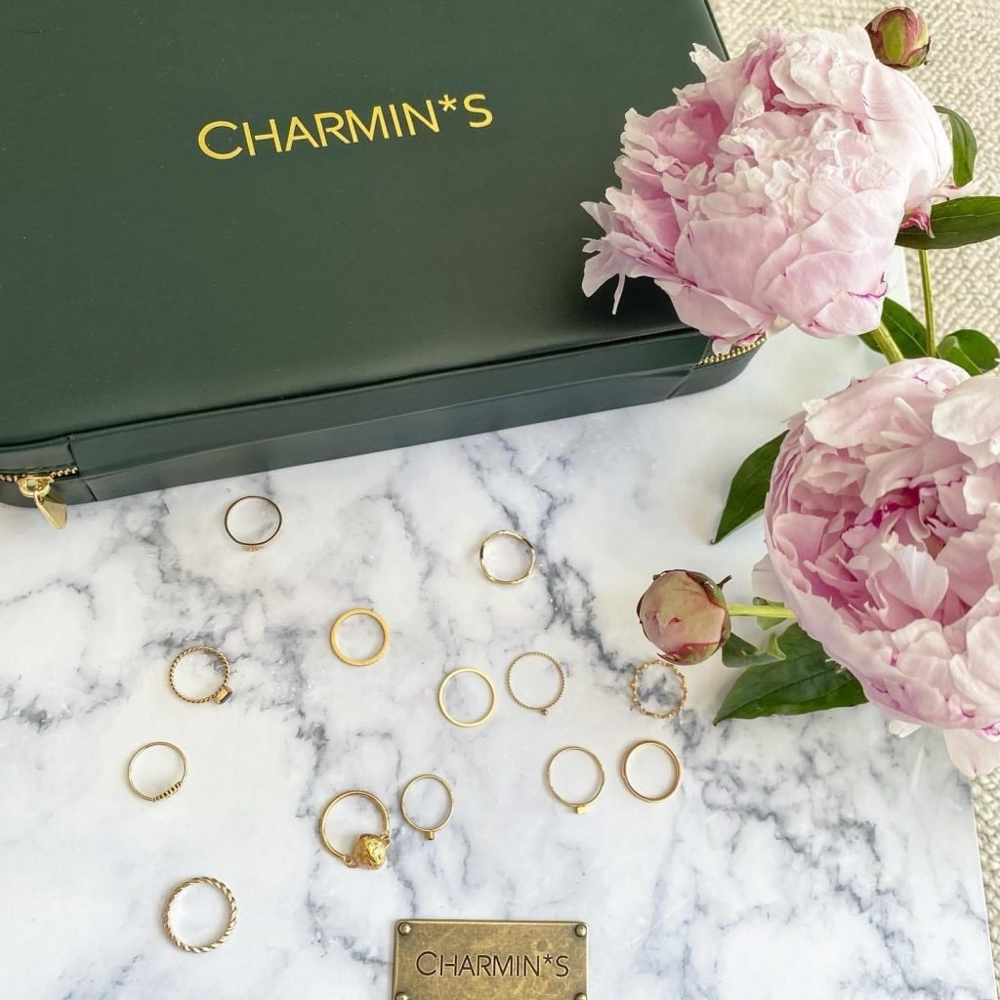
Ringen voor vrouwen "who embrace change and love it".
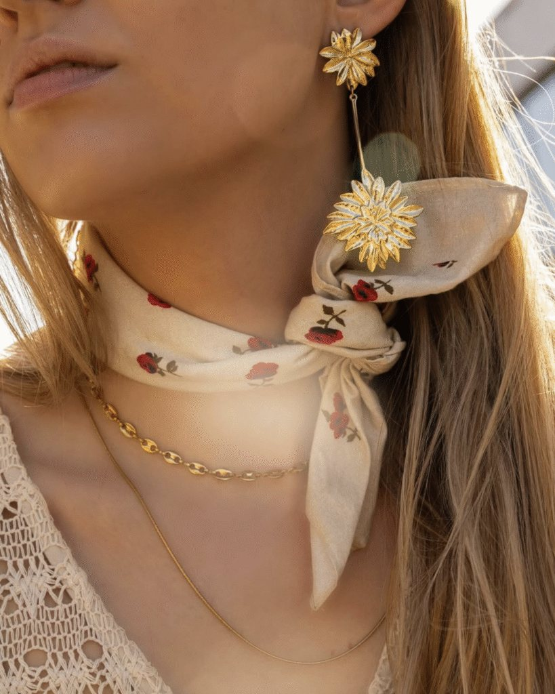
Nieuw Nederlands sieradenmerk, van goldplated stainless steel.
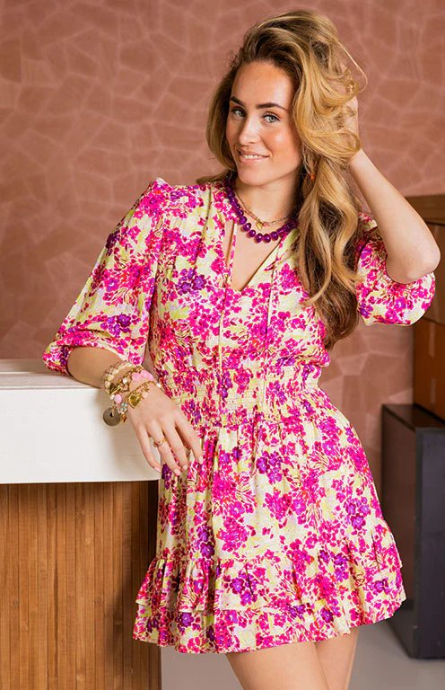
Prints, kleuren en materialen die bij elke gelegenheid passen.
Purper werkt met een inname- en verkoopsysteem. Wij verkopen uw kleding, u krijgt 40% van het verkoopbedrag.
Bel of app ons met uw naam en klantnummer. Inbrengen kan alleen op afspraak, maximaal 30 stuks per keer.
We prijzen uw kleding op ongeveer 1/5 van de nieuwprijs en bieden het 3 maanden aan in de winkel.
In de week die op uw klantenkaart staat haalt u uw 40% en de niet verkochte kleding op.
Op dit moment nemen we geen nieuwe klanten aan voor inname. Heeft u een klantenkaart en bracht u vanaf 2020 nog kleding in? Dan bent u welkom.
Door de grote hoeveelheid kledingdonaties en ruimtegebrek nemen we tijdelijk geen extra donaties aan. Bedankt voor uw begrip!
Purper zit sinds 1994 aan de Raadhuisstraat in Hoogerheide. De winkel is van Petra Hermans en Lydia van Loon, met hulp van vrijwilliger Ingeborg de Rijk.
Mooie kleding verdient een tweede leven. Daarom hangen we het hele seizoen elke week nieuwe kleding in, zodat er altijd iets nieuws te ontdekken is.
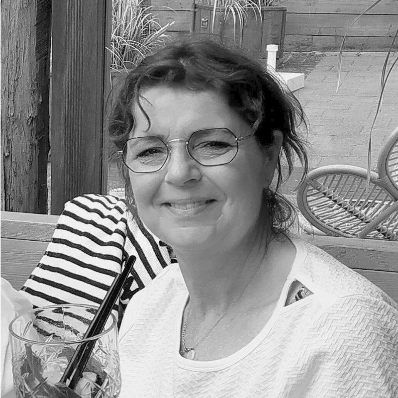
Ingeborg de RijkVrijwilligerJe vindt ons aan de Raadhuisstraat, vlak bij de ruime parkeerplaatsen van de Albert Heijn en Aldi.